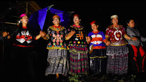
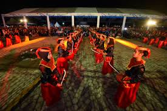

Budaya Sulawesi Tengah
Temukan keindahan dan kekayaan budaya yang ada di Sulawesi Tengah.

Tarian Tradisional
Tarian tradisional Sulawesi Tengah yang memukau dan penuh makna.
Alat Musik Tradisional
Alat musik yang digunakan dalam berbagai upacara adat dan pertunjukan.

Rumah Adat
Rumah adat Tambi adalah rumah panggung tradisional dari Sulawesi Tengah, dihuni oleh suku Kaili dan Lore. Ciri khasnya meliputi atap piramida dan tiang penyangga pendek, yang mencerminkan adaptasi terhadap lingkungan dan budaya lokal.
Kerajinan Tangan
Kerajinan tangan yang mencerminkan keahlian dan kreativitas masyarakat lokal.

Festival Budaya
Festival yang merayakan kekayaan budaya dan tradisi Sulawesi Tengah.